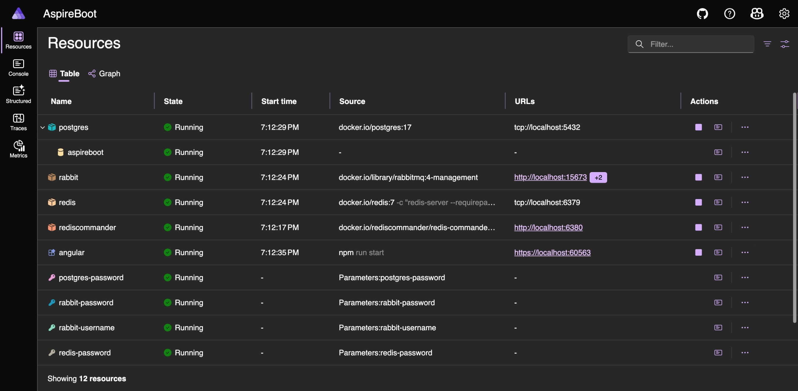
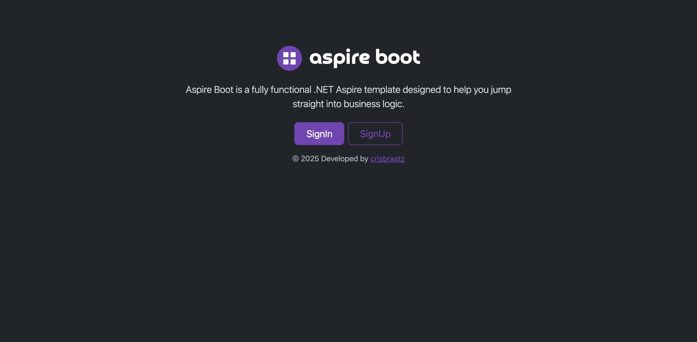
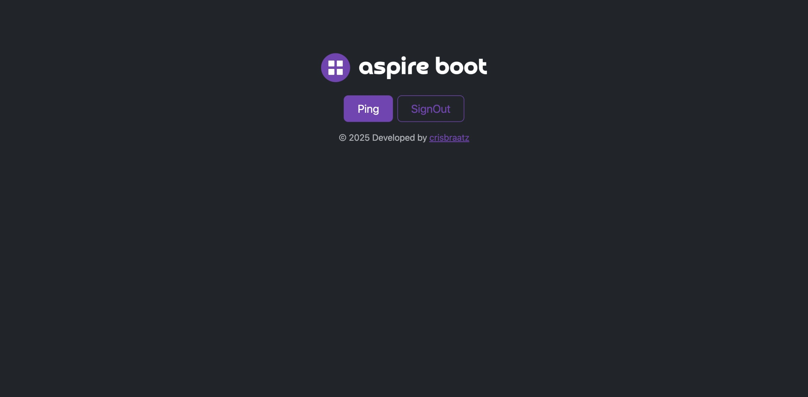
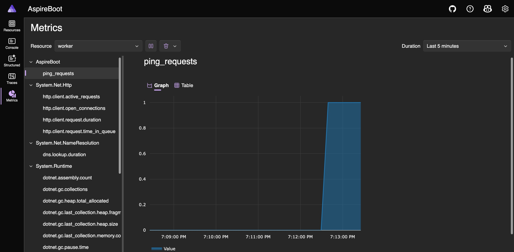
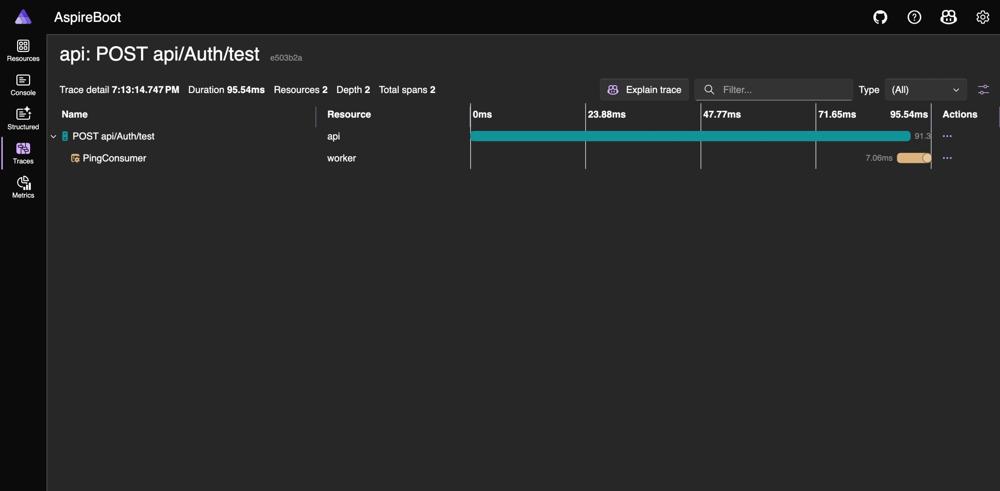

Aspire Boot is a fully functional .NET Aspire template designed to help you jump straight into business logic.
It comes pre-configured with everything you need to build scalable, observable, and modern applications.
Key features
Aspire dashboard
Real-time observability for all services. Monitor health, traces, metrics, and dependencies in one sleek interface.
Responsive frontend
Built with Angular 20, the UI adapts beautifully across devices. Fast, modern, and ready to extend.
JWT auth with refresh tokens
Secure authentication and authorization out of the box. Includes refresh tokens flow and Redis-backed session management.
Metrics & health checks
Integrated OpenTelemetry metrics and health endpoints. Know exactly how your system is performing.
Distributed Tracing
End-to-end visibility across API and Worker. Rabbit trace propagation included for full transparency.
All features
.NET 10.0 LTS backend
Built with the latest .NET Aspire stack. Clean architecture, scalable services, and blazing performance.
Angular 20 frontend
A modern SPA with responsive design, SSL support, and easy customization.
Postgres 17 database
Reliable relational storage with EF Core migrations and auto-migration in dev mode.
Rabbit 4 broker
Message-based communication between API and Worker. Includes management UI for queues and exchanges.
Redis 8 cache
Fast in-memory caching with Redis Commander UI for inspection and debugging.
API & Worker services
Separation of concerns: API handles requests, Worker processes background jobs asynchronously.
JWT auth
SignIn, SignOut, SignUp and RefreshToken endpoints ready to go. Secure by default.
Scalar API docs
Auto-generated documentation for your endpoints to be accessible.
Double tests layers
Unit and integration tests using XUnit. Confidence built-in.